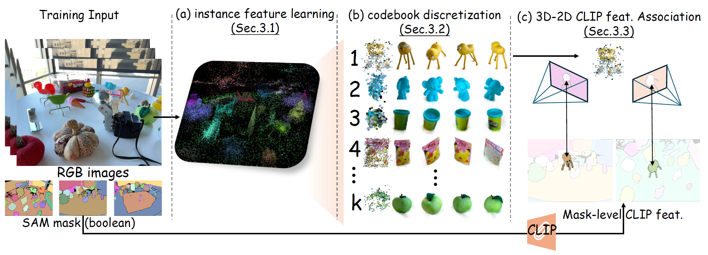
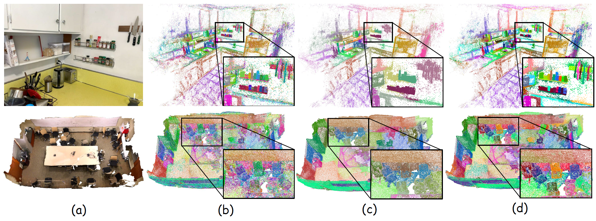
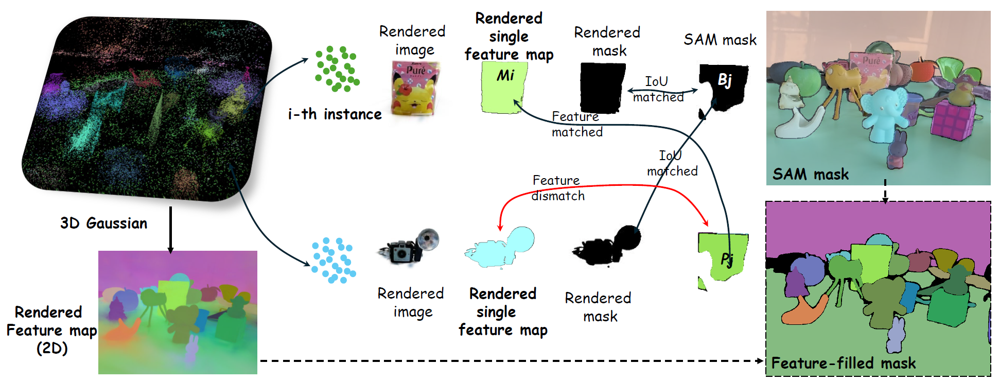

Two types of open-vocabulary understanding based on 3DGS. (a) 2D pixel-level understanding. The language-embedded 3D Gaussians are rendered into 2D feature maps, obtaining regions related to the query text as results. (b) 3D point-level understanding (ours), which selects Gaussians in 3D space related to the query text as results.
Framework. (a) We use the view-independent SAM boolean mask to train 3D instance features with 3D consistency for 3DGS. (b) We propose a two-level codebook for discretizing instance features from coarse to fine. (c) An instance-level 3D-2D feature association method to associate 2D CLIP features with 3D points without training.
Visualization of 3D point features at different stages. (a) Reference image/mesh; (b) instance features learned from Sec. 3.1; (c)-(d) Point features after discretization by coarse-level and fine-level codebook (Sec. 3.2).
3D point-2D CLIP feature association (Sec. 3.2). We render 3D instance points to an arbitrary training view, and associate 3D points with 2D masks based on the principle of joint IoU and feature similarity, which have already been extracted with mask-level CLIP features, thereby indirectly associating 3D points with CLIP features.
@article{wu2024opengaussian,
title={OpenGaussian: Towards Point-Level 3D Gaussian-based Open Vocabulary Understanding},
author={Yanmin Wu and Jiarui Meng and Haijie Li and Chenming Wu and Yahao Shi and Xinhua Cheng and Chen Zhao and Haocheng Feng and Errui Ding and Jingdong Wang and Jian Zhang},
year={2024},
eprint={2406.02058},
}